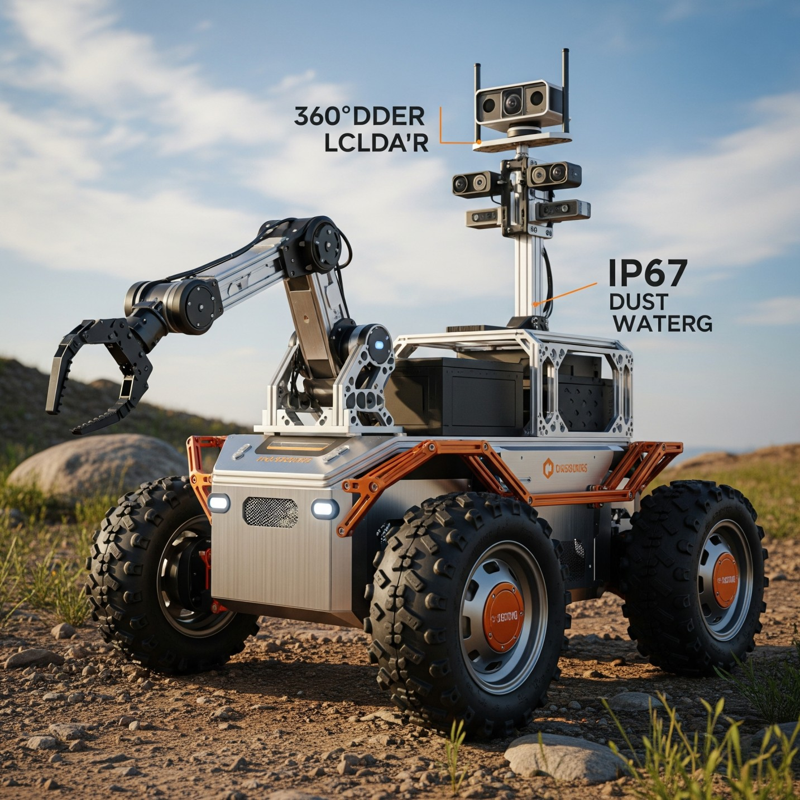

Introduction to Robotics
Robot

Karel Čapek
The word 'robot' was first introduced to the public by the Czech playwright Karel Čapek in his 1920 play R.U.R. (Rossum's Universal Robots). The term was derived from the Czech word robota, meaning "forced labor" or "servitude." In the play, the robots were artificial beings built to serve humans, a theme that has resonated through science fiction ever since.
While science fiction often portrays robots as anthropomorphic machines endowed with intelligence and personality, the engineering definition is more functional. The Robot Institute of America (RIA) provides a widely accepted definition:
"A robot is a reprogrammable, multifunctional manipulator designed to move material, parts, tools, or specialized devices through variable programmed motions for the performance of a variety of tasks."

The key elements in this definition are reprogrammability and versatility. Unlike fixed automation (or "hard automation"), which consists of custom-built machinery designed for a single, high-volume task, a robot can be repurposed for different tasks by changing its programming and end-effector (the tool at the end of its arm). This flexibility makes robotics a cornerstone of modern, agile manufacturing.
The Definition of Robotics
The term robotics was coined by the science fiction author Isaac Asimov in 1942. He famously formulated the "Three Laws of Robotics" as a set of ethical principles for robots to follow:
-
A robot may not injure a human being or, through inaction, allow a human being to come to harm.
-
A robot must obey the orders given it by human beings except where such orders would conflict with the First Law.
-
A robot must protect its own existence as long as such protection does not conflict with the First or Second Law.
While these laws remain in the realm of fiction, they underscore the concept of a machine designed to operate safely and predictably.
In an engineering context, robotics is the interdisciplinary science and technology of the design, construction, operation, and application of robots. It integrates knowledge from several fields:
-
Mechanical Engineering: Kinematics, dynamics, material science, and mechanism design.
-
Electrical Engineering: Electronics, control systems theory, actuators, and sensor design.
-
Computer Science: Programming, artificial intelligence, computer vision, and algorithm design.
At its core, robotics is the study of the intelligent connection between perception and action. A robot senses its environment, plans a course of action based on that sensory input and its programmed goals, and then acts upon the environment.
Test Your Knowledge
Brief History of Robotics
The modern robot was born from the confluence of two mid-20th-century technologies: teleoperators and Computer Numerically Controlled (CNC) machine tools.

Remote Manipulator
1940s-1950s: The Precursors. After World War II, remotely controlled mechanical manipulators were developed at Argonne and Oak Ridge National Laboratories to handle radioactive materials. These master-slave systems allowed a human operator to guide a remote arm through a series of motions. Concurrently, the development of CNC technology enabled the programming of precise motion paths for machine tools.


Unimate
1954-1961: The First Industrial Robot. Inventor George Devol patented a "Programmed Article Transfer" device in 1954, combining the articulated arm of a teleoperator with the programmability of a CNC machine. In 1956, Devol and entrepreneur Joseph Engelberger founded Unimation, the world's first robotics company. In 1961, the first "Unimate" robot was installed at a General Motors plant to tend a die-casting machine. This marked the beginning of industrial robotics. The key innovation was its reprogrammability, allowing it to be adapted to new tasks at a relatively low cost.
1960s-1970s: Adding Senses and Intelligence. The utility of robots was greatly enhanced through sensory feedback. In 1962, Heinrich Ernst developed a robot with force sensing that could stack blocks. This led to the creation of the Project MAC (Man And Computer) at MIT. Around the same time, early robot vision systems were developed. Several foundational robot arms, such as the Stanford Arm, were created at universities, driving research forward. In 1968, Unimation granted a license to Kawasaki Heavy Industries, beginning the rapid adoption and development of robotics in Japan.

PUMA
1970s: The Rise of Software and Assembly. The first high-level robot programming language, WAVE, was developed at Stanford in 1973. In 1974, Cincinnati Milacron introduced the first computer-controlled industrial robot, the T³ (The Tomorrow Tool). A major breakthrough in assembly came from the Draper Laboratories with the invention of the Remote Center Compliance (RCC) device, a passive mechanical wrist that greatly simplified part-insertion tasks. This era culminated in Unimation's introduction of the PUMA (Programmable Universal Machine for Assembly) in 1978, which became a standard in both industry and research for many years.
1980s: A Focus on Dynamics and Control. The 1980s saw a shift from building new robot mechanisms to understanding the fundamental mathematics governing their motion. Researchers developed efficient recursive algorithms (Lagrangian and Newton-Euler formulations) for computing robot dynamics. This enabled the development of advanced control strategies like "computed torque" control, which used a mathematical model of the robot's dynamics to achieve highly accurate trajectory tracking. In 1981, a direct-drive robot, which eliminated the need for gear reduction, was developed at Carnegie Mellon University by Haruhiko Asada, leading to higher speed and accuracy.

da Vinci Surgical System
1990s: Robotics Beyond the Factory. The 1990s saw robotics begin to move out of the structured environment of the factory floor.
- Space Robotics: The Mars Pathfinder mission in 1997 deployed Sojourner, the first robotic rover to operate on another planet, demonstrating the viability of mobile robotics in extreme, remote environments.
-
Surgical Robotics: The end of the decade saw the introduction of the da Vinci Surgical System, which brought teleoperated precision and minimally invasive techniques to the operating room.
-
Legged Locomotion: Honda unveiled the P2 humanoid robot in 1996, a major step towards creating dynamically balanced, walking robots.

Asimo
2000s: The Dawn of Autonomous Systems. This decade was marked by the rise of truly autonomous robots and open-source platforms.
-
Consumer Robotics: iRobot launched the Roomba vacuum cleaner in 2002, which became the first commercially successful domestic robot, bringing robotics into millions of homes.
-
Logistics and Warehousing: Kiva Systems (later acquired by Amazon) revolutionized warehouse logistics with its fleet of autonomous mobile robots, demonstrating a powerful new application for multi-robot systems.
-
Dynamic Legged Robots: Boston Dynamics' BigDog, funded by DARPA, showcased unprecedented capabilities in dynamic balance and terrain negotiation for a quadruped robot.
-
Open-Source Platforms: The introduction of the Robot Operating System (ROS) in 2007 provided a standardized, open-source framework for robot software development, dramatically accelerating research and collaboration worldwide.

BigDog
2010s-Present: The AI and Collaboration Era. The current era is defined by the profound impact of artificial intelligence, particularly deep learning, and the move towards human-robot collaboration.
-
Deep Learning Revolution: Advances in deep learning enabled breakthroughs in robot perception (object recognition, scene understanding) and control. Researchers began using techniques like reinforcement learning to teach robots complex manipulation skills from scratch.
-
Collaborative Robots (Cobots): A new class of robots, designed to be safe to operate directly alongside humans without safety cages, emerged. Companies like Universal Robots and Rethink Robotics pioneered cobots for flexible automation tasks.
-
Autonomous Vehicles: The DARPA Urban Challenge in 2007 spurred massive investment in self-driving car technology, which has become one of the most visible and impactful areas of modern robotics.
-
Humanoid Advancement: Boston Dynamics' Atlas robot demonstrated human-level agility, including running, jumping, and performing gymnastics, pushing the boundaries of dynamic control and whole-body motion planning.
This rich history of innovation in mechanics, sensing, and computation has led to the sophisticated and versatile robots in use today.
Test Your Knowledge
Types of Robot
The field of robotics is incredibly diverse. We can categorize robots into broad types based on their physical structure and primary mode of interaction with the world.
-
Manipulators (Robotic Arms): These robots are typically fixed in place and use a series of links and joints to manipulate objects. They are the classic industrial robots and form the primary focus for the study of kinematics and dynamics in this course. Common subtypes include:
-
Articulated Robot: The most common type of industrial robot, featuring rotary joints (resembling a human arm, e.g., PUMA). These are often referred to by their joint configuration, such as a 6R robot for a 6-axis articulated arm.
-

-
-
SCARA Robot: (Selective Compliance Assembly Robot Arm). Designed for high-speed, light-duty assembly tasks. It is compliant in the horizontal plane but rigid vertically.
-

-
-
Parallel Manipulator: Characterized by closed-loop kinematic chains. The end-effector is connected to the base by several independent linkages. This design offers high rigidity, speed, and accuracy (e.g., the Delta robot).


-
-
-
Cartesian/Gantry Robot: Uses three prismatic joints, with axes that are coincident with a Cartesian coordinate system. They are often large and used for pick-and-place or CNC machining.
-

-
Mobile Robots: These robots are capable of moving through their environment.
-
Wheeled Mobile Robots (WMRs): Use wheels for locomotion, which is highly efficient on prepared surfaces. Subtypes include differential drive, tricycle, and car-like (Ackermann) steering systems.
-

-
-
Legged Robots: Use articulated limbs to walk, run, or climb, allowing them to traverse complex and unstructured terrain. They are classified by the number of legs (e.g., biped, quadruped, hexapod).
-

-
Aerial Robots (Drones/UAVs): These robots operate in three-dimensional space.
-
Fixed-Wing UAVs: Resemble traditional airplanes and are efficient for long-range surveillance and mapping.
-

-
-
Multi-rotor UAVs: Use multiple propellers for lift and control (e.g., quadcopters, hexacopters). They offer vertical takeoff and landing (VTOL) and hovering capabilities, making them ideal for inspection and photography.
-

-
-
Flapping-Wing UAVs: Bio-inspired robots that mimic the flight of birds or insects.
-
-
Autonomous Underwater Vehicles (AUVs): Un-tethered robots that operate underwater for tasks like oceanographic mapping, underwater infrastructure inspection, and scientific research.

-
Humanoid Robots: Robots designed to have a body structure resembling a human, including a torso, head, two arms, and two legs. They are a major research platform for studying bipedal locomotion, manipulation, and human-robot interaction (e.g., Honda's ASIMO, Boston Dynamics' Atlas).
Test Your Knowledge
Degrees of Freedom (DOF))
Before we can analyze the motion of a robot, we must first quantify its capacity for motion. This is done using the concept of Degrees of Freedom (DOF).
The Degrees of Freedom (DOF) of a body is the number of independent parameters required to completely specify its configuration (position and orientation) in space.
The DOF of a robot's end-effector determines its ability to reach different points and achieve different orientations. The number of joints in a manipulator is often referred to as its degrees of freedom, as each joint typically provides one independent parameter of motion.
Let's build this concept from a simple point to a full rigid body.
-
DOF of a Point: A point is a geometric entity with no size or orientation. We only need to specify its position.
-
In 1D space (a line), a point can only move along that line. Its position can be described by a single variable (e.g.,\((x,y)\)). Therefore, it has 1 DOF.
-
In 2D space (a plane), a point's position is described by two coordinates (e.g., \((x,y)\)). Therefore, it has 2 DOF.
-
In 3D space, a point's position is described by three coordinates (e.g., \((x,y)\)). Therefore, it has 3 DOF.
-
-
DOF of a Rigid Body: A rigid body is an object of a fixed size and shape. Unlike a point, we must specify not only its position but also its orientation.
-
In 2D Space (Planar): Consider a flat object moving on a tabletop. To specify its configuration, we need to know the position of a reference point on the object (2 parameters: $(x,y)$) and its angle of rotation about an axis perpendicular to the plane (1 parameter: $\theta$).
-
Total DOF = 2 (for position) + 1 (for orientation) = 3 DOF.
-
-
In 3D Space: This is the most general case for robotics. To specify the configuration of a rigid body in 3D space, we need:
-
3 parameters for position: The $(x,y,z)$ coordinates of a reference point on the body.
-
3 parameters for orientation: Describing the body's rotation in space. This is more complex than the 2D case. While there are many ways to represent 3D orientation (e.g., Euler angles, quaternions), it can be proven that three independent parameters are required. Common conventions include describing rotations about three principal axes (e.g., roll, pitch, and yaw).
-
Total DOF = 3 (for position) + 3 (for orientation) = 6 DOF.
-
-
This value is fundamental: an unconstrained rigid body in 3D space has 6 degrees of freedom. This means that for a general-purpose robotic manipulator to be able to place its end-effector in any arbitrary position and orientation within its workspace, it must have at least 6 degrees of freedom.
Interactive Lab: Degrees of Freedom
This is an interactive tool for you to get a grasp on the concept of degrees of freedom.
Select Scenario
Point on a Line
You can only move the point along the horizontal (X) axis. This is 1 Degree of Freedom (Translation in X).